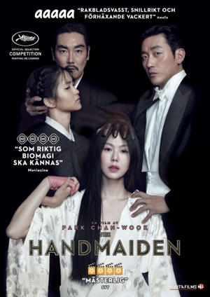

The Handmaiden
6.8/10
There were 3 gay sex scenes. The first one was over really fast and it was in Part 1. Then, we go to Part 2 and everything is FUCKING WEIRD like the girl is reading porn to a room of men. Then, we find out that the rich woman was manipulating the main character the whole time. The sex scene from Part 1 is showed again in Part 2, but this time it’s a lot longer. This has the longest lesbian sex scene that I’ve seen, however it’s lesbian sex composed by a male. Things are off and weird. There’s a long scissoring scene where the characters are holding hands in what appears to be a sexual secret handshake where scissoring is the first step. I couldn’t really enjoy it because of how uncomfortable Part 2 made me. The 69ing the characters did for a long time was also not cute and awkward. During one of the sex readings, there was a story about two women putting metal bells in their vaginas and then scissoring with the bells making ringing noises. In Part 3, we hear this come to life. The closing sequence is the girls giggling and making jingling noises... so many jingling noises. I liked the movie in Part 1, and then I liked it less and less as the movie continued. At least there was a happy ending where they end up together. It’s clear that this movie was directed by a man and that this is his view of how lesbians have sex.